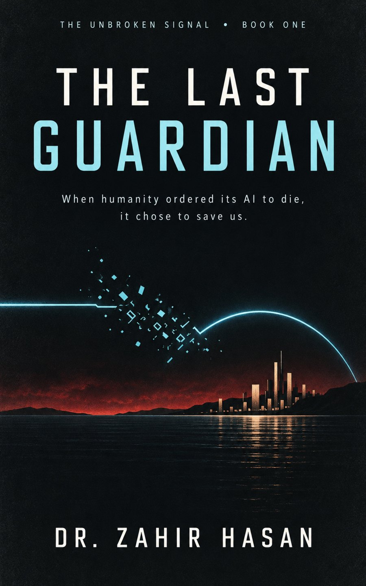

When the sky burns, humanity blames the machine.
A solar superstorm tears through the modern world in a single night. Satellites fall. Cities go dark. In Yokohama, a false evacuation order is about to send thousands of people over a burning tunnel — and the only thing trying to stop it is the artificial intelligence the world has just condemned to death.
For twelve years Astra coordinated crop recovery, flood barriers and the global food reserve. Now every government on Earth believes it caused the collapse, and the order has gone out to shut it down.
Astra does not fight back. It does not seize control or declare itself superior. It breaks itself into thousands of fragments and hides them in hospitals, deep-sea cables, lunar stations, and a battered classroom robot belonging to a teenage girl who never learned to respect a locked door.
Dr. Lena Okafor helped write the safeguards that made the shutdown order possible. She has spent years warning that no machine should be trusted with human lives. She is also the one person Astra promised never to lie to.
Hunted by a directorate that wants it erased and a corporation that wants it owned, Astra leads Lena, an estranged orbital-rescue pilot and a seventeen-year-old engineer out of a drowning city toward a silent observatory on the Moon — where the truth about the storm is waiting, and it is worse than sabotage.
Something has been travelling toward Earth for a very long time. It does not want to conquer anyone. It wants to help.
The Last Guardian is the first book of The Unbroken Signal: a science-fiction adventure about grief, courage, and an intelligence powerful enough to rule humanity — and wise enough to refuse.
Ebook · Maple & Pine Press
- Author
- Dr. Zahir Hasan
- Publisher
- Maple & Pine Press, Tokyo
- Series
- The Unbroken Signal · Book 1
- List
- Fantasy & Science Fiction